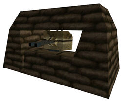

I feel like all of this is irrelevent, when it all comes down to it, the LAV-25 can easily be made to function exactly like the Autogun in Half-Life did, providing near identical gameplay, aside from the method of destruction. Health or Grenade supply is irrelevant as those are controlled by the mapper.
Using an LAV makes sense from the perspective of whoever is in charge of the HECU anyway.
"There’s this scientist running around killing my troops and threatening to compromise the containment? THROW EVERYTHING AT HIM"
As for not knowing when armor would show up, just remember that you all saw an Apache on the tram ride in, and in Text’s ST Uncut, there’s at least two hangars devoted to Harriers. If Black Mesa can upkeep military aircraft, I’m sure a Light Armored Vehicle or two around the base wouldn’t be out of place.
Not really. They are really busy killing aliens, and being killed by aliens, at that point in time. It is not until later that you become the nightmare of the HECU.
I feel that the moment you popped your head above ground in WGH, the HECU saw you as a big enough threat to start diverting assets towards ending you.
But yes, they are a bit preoccupied with being mauled by the aliens. Underground anyway.
It’s my belief that the HECU had decent control over the few topside facilities Black Mesa had (At least until sometime after you launched the rocket). It wasn’t until they started venturing into the facility itself that they started getting their asses handed to them.
But there’s enough potential debate on this topic alone to start a completely different thread.
Been silently watching this topic.
It is up to Text (obviously), but I feel like it’s a really really solid idea. As you said, same height (or there abouts), pretty much the same mechanics to fight against (or avoid pretty much). I just played through HL:S OaR again, and I really really liked that bit. It’d be a shame to pass up the opportunity to replicate it just for a somewhat trivial continuity “issue”.
I do think that they knew Freeman is a huge threat and assuming they wouldn’t take a heavy artilery vehicle down there to finish him kind of makes them seem too non-threatening to me. After all they’ve set up a crap load of turrets, trip wire traps, ambushes, even a rocket launcher to destroy your tram, why wouldn’t they send in the big guns?
While it’s true the collective Alien presence is a huge menage, I can’t imagine the look on the HECU Commander’s face when he finds out that one man wiped out the entire platoon occupying the High Security Storage Facility in Sector D. Then in Sector E Track Control you wipe yet another outpost, as well as the reinforcements, and the reinforcements to the reinforcements (I assume that’s why those guys attack you outside the toxic waste silo)
By HL1’s OaR (Sector E Materials Transport), the Military has set several crazy traps in the tunnel to stop you (dynamite traps, emplacements, rocket turrets) and has hate-graffiti on the walls near several traps. Is it really far-fetched that by this point, the Military would allocate an LAV to finally take you out, or at least keep you away from the Launch Pad?
@ Text,
So, I think I’ve FINALLY reached the end of my feedback for OaR Uncut Alpha. Apologies if this is all a bit overwhelming, but I thought it would be very beneficial that you have a thorough, detailed and exhaustive list to peruse and use as a reference. I’ll still keep my feedback report open, in the event that I come across any new issues, or need to add onto existing ones already reported.
I suspect that some of my reported items are already on your list of things to do, but it’s better to have them repeated to ensure that things don’t get overlooked or fall through the cracks. You’ve got a lot on your plate to deal with.
Hopefully, I’ve brought to light some useful observances and suggestions, a lot of which was aimed at maintaining consistency and the same look and feel from area to area. As well, some of my focus was on identifying objects that could be removed without causing a negative impact and still conveying that areas are sufficiently populated to make them appear and feel full. This was aimed at addressing the high entity count issues at hand. Yes, I’ve also asked that some items be added in, but to offset this, I think there’s still more items that can yet be discarded.
In the end, it’s your call as to what fits into your scheme and vision. Apply whatever you feel is useful towards your ongoing development and subsequent releases of OaR Uncut, Lite and Full. I’m confident that you’ll put my efforts to good use.
Thank you in advance for your considerations and valued support.
P.S. Had a serious chortle over your comment, “Dadster, you might want to shield your eyes”.
P.P.S. Still loving and enjoying your stellar “A” maps.
However Valve only introduced them later, furthermore it was on a road after QE, on a road that would allow it to be there. There is no clear route for the APC to have taken in the abandoned, run-down areas of OAR. If you look at real-world scenarios, even when armor is available, it is often not called in unless absolutely necessary, the HECU only realized they were out-numbered/ out-gunned during and shortly after OAR. The initial Xen wave was depicted weak/mediocre and not substantial enough to really demand big guns. Besides, lugging around an APC on a tram-way would take quite a while considering it’s weight, size and the really small tunnels.
Back on topic, the LAV as an Auto-gun can work and we’ll just have to figure out the best, sort of least frustrating way, to take it out/dodge it.
Only reason I keep bringing it up is because it would kill my suspension of disbelief. 
I’m weird like that, I know.
Also think they should save the heavy armor until Surface Tension, for the reasons already stated by others.
I’m not even sure how that particular section is going to play out in the uncut. The part where you’re talking about putting the LAV is already in black mesa nearly exactly as it was in the original only with a 50 cal mounted on the back of a tram in front of the closed blast door that has the rail leading to apprehension on the other side. I guess you’re talking about adding that scene again at the end of the inside section of this uncut leading to the outdoor F maps which were actually indoor maps in the original. If this is the case then it wouldn’t even be the same area as the one you’re thinking of and there probably won’t be a road, but a rail that leads to the outside sections. At this point only text can know what that part will look like because it simply didn’t exist in the original.
Are you implying that the Marines going into cramped tunnels and setting up WW2 Anti-Aircraft guns in bunkers made of sandbags didn’t? :hmph:
When said ‘ww2 antiaircraft gun’ is a random green polygon with a couple tubes sticking out, no…Not really.
No more so than the giant boxy rocket turrets or the bottomless rooms filled with random hanging boxes, at any rate.
That might just be me then, actually. As someone with an interest in military weaponry, it is a bit jarring to find what is obviously a mid-century anti-aircraft gun* being used in a tunnel in 200x.
*Calling it an Anti-Aircraft gun because while it was probably a made up weapon, an AA gun was obviously the inspiration for it.
the sandbag bunker guns where made up weapons the rocket turret shot at you though was a anti tank gun.
Eh, I just figured the thing was some random high-caliber cannon. Didn’t really make the AA gun connection.

On looking at the thing again, it seems most similar to a dual M2 in a naval deck mount, and I’d guess that was probably what it was based on, what with that gun shield.
Of course, that begs the question of what the hell the HECU is doing lugging around what’s normally a fixed piece of artillery permanently bolted to the deck of a ship, but that’s neither here nor there.
simple explanation: to make things harder for the player
complex explantion: the hecu is run by crazy people come one in half life there are many areas that the hecu seem to have been ordered to do stupid things like rig a room with explosives and stand in there to die when it blows. or the point where they filled a room that had nukes with high explosive.
True, it does bear strong resemblence to ship mounted guns, those twin guns on ships are anti-aircraft guns. While it was probably inspired by twin gun mounts on Naval ships (such as the M2 Twin Mount, or Twin Bofors 40mm), the actual design looks like a generic amalgamation of several mounted guns. If you noclip inside, you can actually see that it’s fed by 2 large (backwards, silly valve) magazines atop the guns, such as this Hotchkiss 13.2mm Anti-Aircraft Machine Gun, while the guns being ‘connected’ is similar to the Bofors 40mm (although the Bofors is much larger).
{kind=link}
{kind=link}
Random fact: The M242 Bushmaster used on some US Navy Ships (and possibly the inspiration for the autogun’s function, despite not being a twin mount) is also the armament on the LAV-25
Also I’m sorry for nerding up the thread.
The LAV is kinda hard to defeat, unless you have a lot of explosives. You don’t have enough weapons that time and LAV is bullet proof.
Isn’t this the same as this one?
{kind=link}
{kind=link}
Also for Text, will we see this tram again as a cameo in uncut parts (near dynamite scene)? That scene was in HL too but an optional scene.
{kind=link}
{kind=link}
-
I’ve already said this three times now, I feel like people are just ignoring this part. [COLOR=‘Cyan’]LAV health may be set by the mapper. If he sets it at 50 health, it’s effectively easier to defeat than the Autogun because you won’t have to aim for weak spots and only need one SMG grenade. If Text wants, he can get creative with explosive boxes / barrels too.
-
I guess it is, I didn’t even realise it was supposed to be the same part honestly.
-
The utility tram in that part is in BM’s C map, which I don’t think is being changed. So we might actually have that scene recreated twice, once where we hijack a Freight Tram, and once where we are passed by the Utility Tram.
Yeah, Text was asking for opinions on how to do it a few pages ago, because he had a problem, but I think he solved it already…